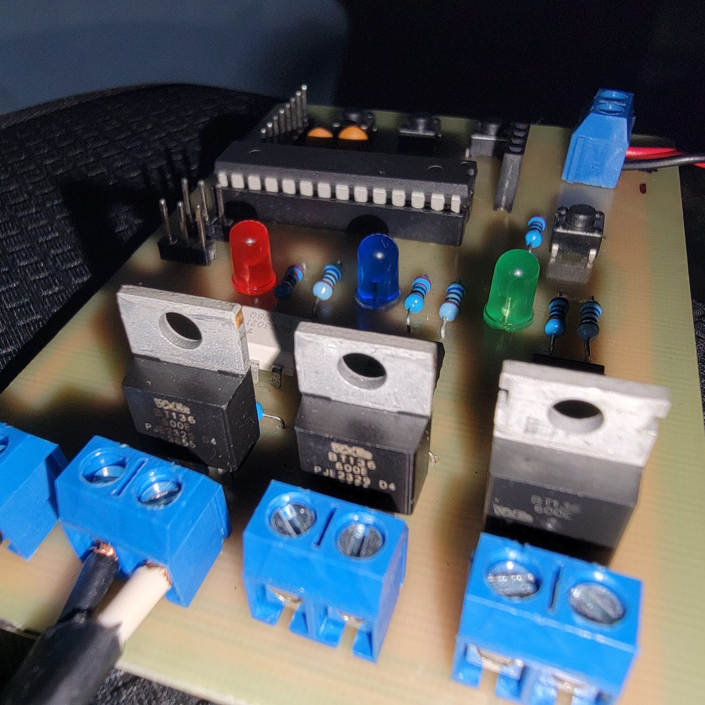
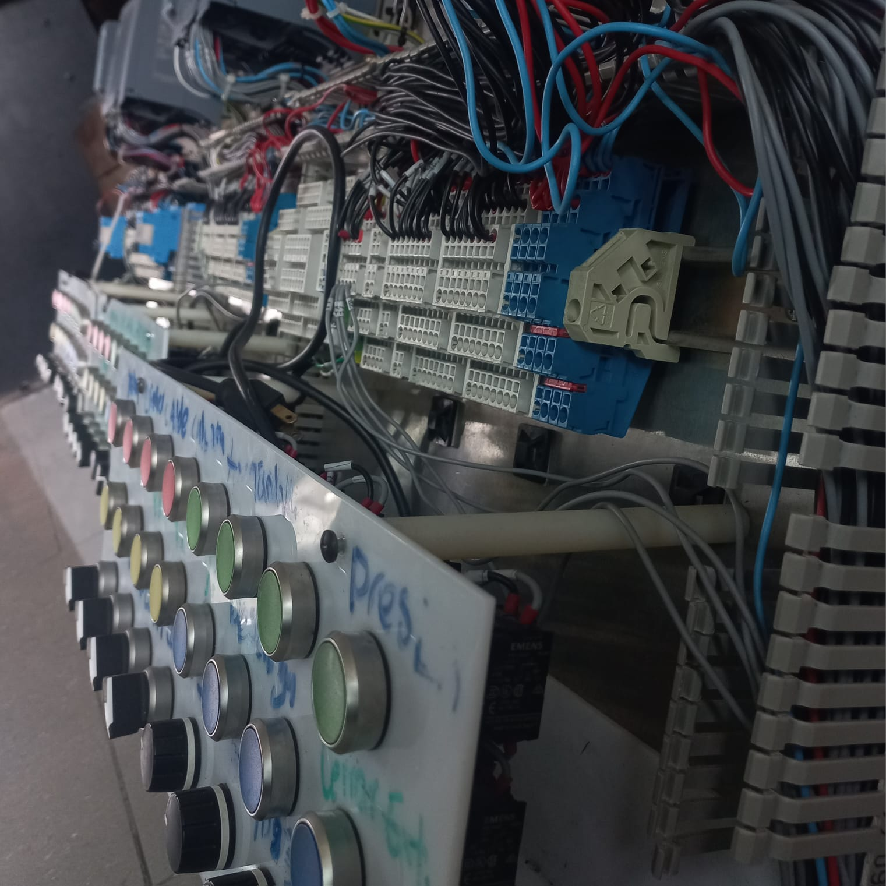
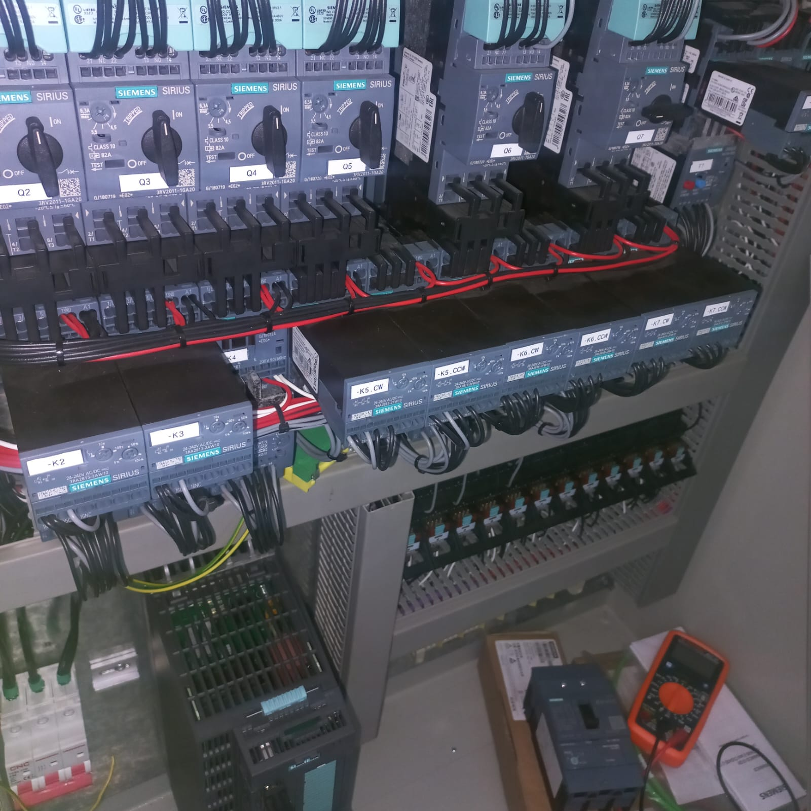

Mi Experiencia en INTECAP
Electrónica Industrial • Automatización • PLC • Microcontroladores
Este sitio web recopila mi trayectoria técnica y los aprendizajes obtenidos durante mi formación en la carrera de Electrónica Industrial en INTECAP. A lo largo de esta experiencia desarrollé habilidades en electrónica analógica, electrónica digital, programación de microcontroladores, programación de PLC, neumática, hidráulica, automatización industrial y sistemas eléctricos.




Habilidades Adquiridas
⚡ Electrónica Industrial
🔌 Electrónica Digital
📟 Electrónica Analógica
💻 Microcontroladores
🤖 Programación PLC
⚙️ Automatización Industrial
🔧 Neumática
🔩 Hidráulica